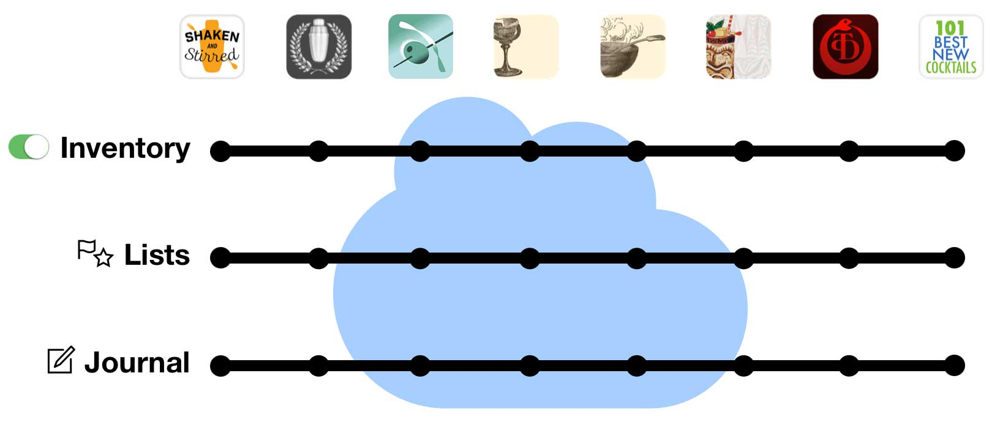

Shaken and Stirred is a carefully curated collection of nearly 200 easy, essential, delicious craft cocktails to make at home.
Each recipe links to a YouTube tutorial video from Robert Hess and Small Screen and you can input your ingredient inventory and the app will show you which drinks you can make!
★★★★★ by Centex Guru, Aug 2, 2017
Though I've made numerous drinks and cocktails over the decades, I never went much beyond a few comfortable favorites, that is, unless I was sitting at a competent bar somewhere and could order something outside of my comfort zone! Along with "The Bar Book" (Kindle version) by J. Morgenthaler, plus this app, I feel I've received a fairly inexpensive, but surprisingly thorough, mixology starter course -- that is, inexpensive if you don't count the liquor store bill! Features such as the ability to track your available ingredients (including across their various apps via an included sync service), making journal entries (notes), and knowing what drinks you can build given your current inventory (or with one or two more ingredients) made the cost of this app a non-issue for me. Basically what one craft cocktail might cost you at a decent venue. Last but not least, the built-in videos are a great aid for newbies (and for not-so newbies). Bottom line: I really appreciate having this app available, such that I've already purchased another of their companion apps (Total Tiki). Good stuff!
Fundamentally delicious
This is an ideal cocktail app for absolute beginners. However, it’s awfully handy for experienced drink-mixers, too: while our other acclaimed recipe apps delve deeply into particular mixological themes, this one places a cross-section of popular, simple, proven recipes close at hand for quick reference.
Alaska Cocktail
Algonquin Cocktail
Americano Highball
Ante Cocktail
Applejack Fix
Apricot Cocktail
Apricot Lady Cocktail
Aromatic Collins
Attention Cocktail
Aviation Cocktail
Añejo Highball
Bamboo Cocktail
Beach Bum’s Own
Beauregarde’s Breakfast Cocktail
Between the Sheets Cocktail
Bijou Cocktail
Biter Cocktail
Black Donald
Black Feather Cocktail
Black Hawk Cocktail
Blood and Sand Cocktail
Bloody Mary
Bobby Burns Cocktail
Bordeaux Cocktail
Bourbon Crusta Cocktail
Bourbon Milk Punch
Brandy Alexander Cocktail
Breakfast Collins
Bridal Cocktail
Bucks Fizz
Cabaret Cocktail
Caesar
Calvados Cocktail
Caprice Cocktail
Captain’s Blood Cocktail
Casino Cocktail
Celery Sipper
Champagne Cocktail
Champagne Flamingo Cocktail
Champs Elysees Cocktail
Chaplin Cocktail
Chas Cocktail
Chrysanthemum Cocktail
Cloister Cocktail
Coffee Cocktail
Corpse Reviver #1 Cocktail
Corpse Reviver #2 Cocktail
Cosmopolitan Cocktail
Cucumber Lavender Sour
Daiquiri Cocktail
Delmonico Cocktail
Denny Triangle Cocktail
Derby Cocktail
Deshler Cocktail
Diabolo Cocktail
Dry Martini Cocktail
Eagle’s Dream Cocktail
East India House Cocktail
El Diablo
Embalmer
Evergreen Swizzle
Eye Opener
Fairbank Cocktail
Fancy Free Cocktail
Fancy Whiskey Cocktail
Festa Cocktail
Flame of Love Cocktail
Fog Cutter
Ford Cocktail
Fourth Regiment Cocktail
French 75 Cocktail
French 75 Cocktail
Frostbite Cocktail
Gimlet Cocktail
Gin and Tonic
Gin Fizz
Grasshopper Cocktail
Guion Cocktail
Hakam Cocktail
Harrington Cocktail
Harvest Moon Cocktail
Holiday Stinger Cocktail
Hooker Cocktail
Hop Toad Cocktail
Hot Buttered Rum
Zig Zag Café’s Hot Buttered Rum
Hula Hula Cocktail
Hurricane
Income Tax Cocktail
Irish Coffee
Jack Rose Cocktail
Japanese Cocktail
Jasmine Cocktail
Jolly Roger Cocktail
Kentucky Medicine Cocktail
King’s Elixir Cocktail
Kir Royale
La Louisiane Cocktail
La Paloma
Last Word Cocktail
Leap Year Cocktail
Lemon Drop Cocktail
Lion’s Tail Cocktail
Lucien Gaudin Cocktail
Mahogany Cocktail
Mai Tai
Manhattan Cocktail
Margarita Cocktail
Martinez Cocktail
Metropole Cocktail
Mint Julep
Mojito
Monkey Gland Cocktail
Monstre Verte Cocktail
Monte Carlo Cocktail
Moscow Mule
Negroni Cocktail
Ocean Shore Cocktail
Old Cuban Cocktail
Old Fashioned Cocktail
Old Pal Cocktail
Opera Cocktail
Outrigger Cocktail
Pegu Club Cocktail
Petruchio Cocktail
Petruchio Cocktail
Pimm’s Cup
Pink Gin Cocktail
Pisco Sour Cocktail
Piña Colada
Poet’s Dream Cocktail
Prado Cocktail
Prohibition Cocktail
Queen’s Park Swizzle
Ramos Gin Fizz
Red Snapper
Renaissance Cocktail
Ritz Bijou Cocktail
Rob Roy Cocktail
Rosita Cocktail
Royalist Cocktail
Rubicon Cocktail
Rum Punch
Rum Ramsey Cocktail
Rye Old Fashioned Cocktail
Sangria Blanc
Saratoga Cocktail
Satan’s Whiskers Cocktail
Sazerac Cocktail
Scofflaw Cocktail
Scorpion Bowl
Seelbach Cocktail
Sherman Cocktail
Sidecar Cocktail
Singapore Sling
Spencer Cocktail
Straits Sling
Suburban Cocktail
Suffering Bastard
Swagger Cocktail
Tequila Old Fashioned Cocktail
Tip Top Cocktail
Tom Collins
Trident Cocktail
Vacation Cocktail
Vesper Cocktail
Vieux Carre Cocktail
Violet Fizz
Volcano
Voyager Cocktail
Wallingford Cocktail
Washington Cocktail
Weeski Cocktail
Wet Martini Cocktail
Whiskey Sour Cocktail
White Lady Cocktail
Widow’s Kiss Cocktail
WTF Cocktail
Young Man Cocktail
Zim Zala Bim Cocktail
Zombie (1956)
Easy-to-use power
Search by name or ingredient just like in your address book. Surf through recipes and ingredients by tapping hyperlinks.
More surgical questions are just a few taps away: filter all the recipes by any combination of ingredients and keywords.
Ingredient aware
Our drink recipe apps have the smartest ingredient system. Simply check off what you have and the app will tell you which drinks you can make, including legit substitions.
★★★★★ by RoyWagner, Jun 18, 2018
If you are seriously, or even casually, interested in making good cocktails, any or all the cocktail apps from Martin Doudoroff are well worth getting. They all share information, including the ingredients you have, between the apps.
As a mixologist, I have tried many cocktail apps. Martin’s are the best. The user interface is excellent. The notes included from many of the great mixologists are very informative. The apps are all based on the leading mixology books and text material.
The Robert Hess videos, included in this app, are what got me started in my passion for mixology.
Try one, add more. Enjoy and cheers!
Simple tools of great utility
Flag recipes you want to try, populate your favorites list, create a new list for planning the drinks for your next party. Add your own notes to any recipe.
Part of a talented family
Shaken & Stirred inter-operates with its seven sibling recipes apps that you can add at any time.
Set up your free sync account and all these apps can share your ingredient inventory, lists and journal notes. In the same manner, you can have Total Tiki on both your iPhone and iPad, and they’ll stay in sync. You can even access your sync data with a web browser.